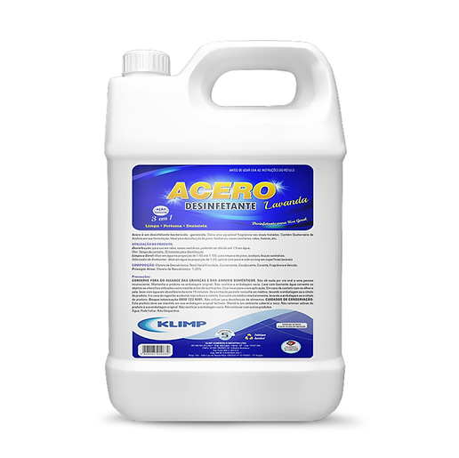

ACERO LAVANDA
DETALHES DO PRODUTO
Volume da Embalagem: 5 Litros
FINALIDADE DE USO
Desinfecção
INFORMAÇÕES DO ROTULO
Desinfecção: para uso em ralos, vasos sanitários, podendo ser diluído até 1/5 em água.
Obs.: Tempo de contato; 10 minutos para desinfecção.
Limpeza Geral: diluir em água na proporção de 1:50 até 1:100, para limpeza de pisos, azulejos, louças
sanitárias.
Odorizador de ambientes: diluir em água na proporção de 1:20, aplicar com pano e rodo ou mop em
superfícies laváveis.